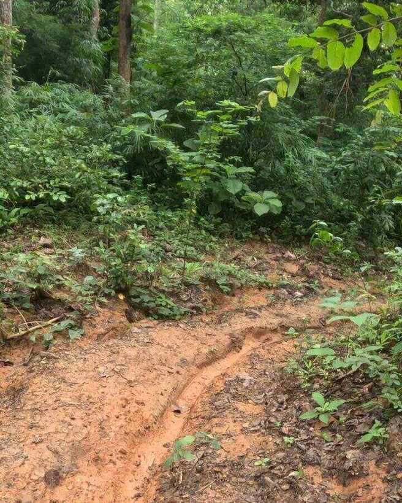
The group adjusts to your speed, not the other way round.
Chiang Mai Enduro RidersGroup ride rulesGroup ride rules
Every person joining a ride organized in the Chiang Mai Enduro Riders group agrees to these rules.
 01
01Disclaimer
01
A group of friendsChiang Mai Enduro Riders is only a group of friends who ride together — not a business, organisation or guide service.
02
No money and no servicesNo professional services are provided in the group and no money changes hands.
03
Ride at your own riskRide leaders, group admins and other riders are not responsible for your safety or for any legal consequences of the rides.
04
No guaranteesNo GPS track is represented by us as safe or legal. Group information is recreational only, not safety or legal advice.
Enduro riding is dangerous: you join our rides at your own risk.
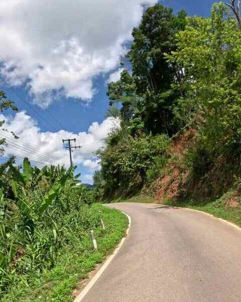
02The golden rule: ride your own pace
01
Ride within your abilityDo not try to keep up with the group beyond your skill level.
02
Too difficult?Slow down, take the easier line, walk the bike, or ask for help. We’ve all been there.
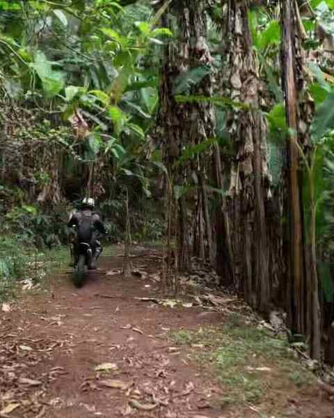
03Before the ride: arrive ready
01
Be on time10–15 min late is OK, longer holds up the group
02
Full tankFill up at the meeting point.
03
Water and snacksCarry at least 3 L of water and snacks
Full protective gear, always
Helmet and gogglesHigh bootsGlovesKnee guardsChest protection
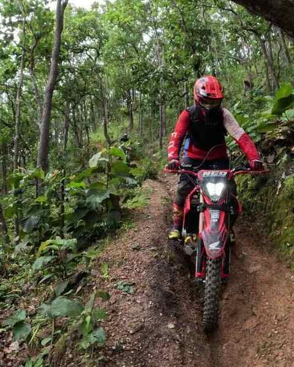
04Before the ride: your bike
01
CRF or lighterHeavier bikes only for very experienced off-road riders
02
Check your bikeNo leaks · Brakes working · Chain tension correct: a loose chain can come off and break your engine
03
Must haveHand guards (save your levers when you crash) · Off-road tyres (50/50, or full enduro for L3-L4) · Rim locks (L2 and up) · Basic tools · First aid kit
04
RecommendedPull strap · Tow line
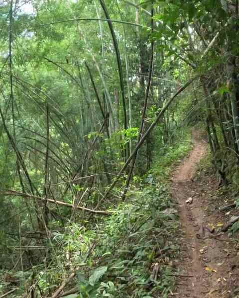
05Riding as a group: roles and formation
01
Sweep · backExperienced. Rides last, never passes anyone, helps with breakdowns and crashes
02
RidersEveryone else. Follow the rules, look after the rider in front, wait for the rider behind
03
Lead · frontExperienced. Navigates, sets the pace for the slowest rider, decides stops and route changes
04
Never pass the leadKeep the leader's pace
05
Never fall behind the sweepIf you stop, the sweep stops with you
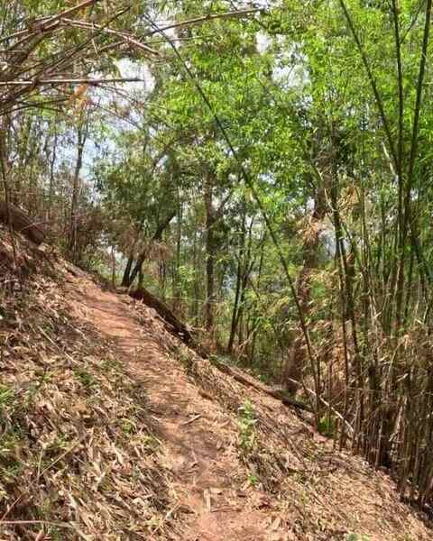
06Help the rider in front
01
Look out for the buddy in frontThey fall? Help lift the bike. Stuck on a hard section? Help push. Need more hands? Call the riders behind you
02
Don't lose the rider behind youOut of sight? Slow down until they catch up.
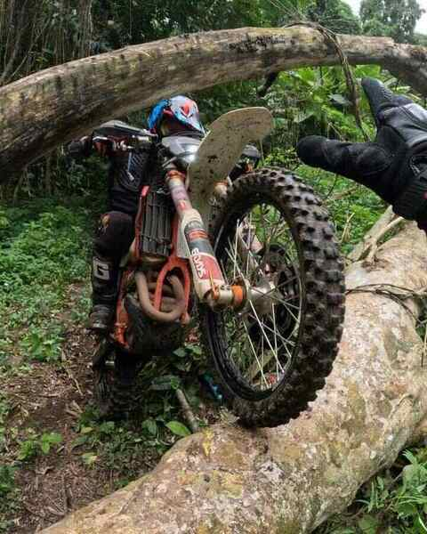
07Speak up
Fatigue causes most crashes.
01
Pace or terrain too much?Tell the lead — they'll adjust.
02
Tired, hurt or out of your depth?Say so.
03
Slowing down is fineSlowing down or ending early is fine.
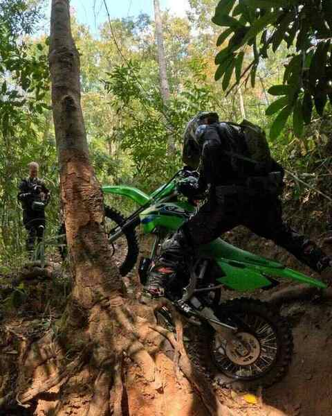
08Spacing and stopping
Keep a safe gap — leave room to stop if the rider ahead falls.
01
More gapOn descents, in mud and in dust.
02
No tailgatingNever ride on someone's rear wheel.
03
Stopping?Pull fully off the line — never on a blind corner or behind a crest.
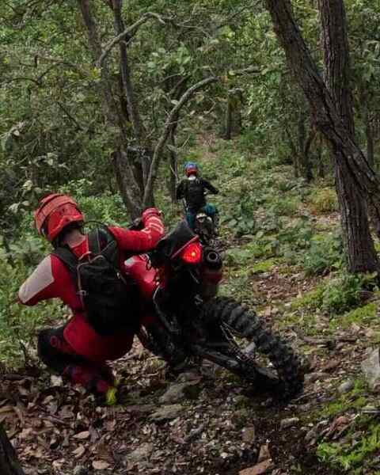
09“Corner man” signal
Before every junction — given on the move: no stopping, no turning round.
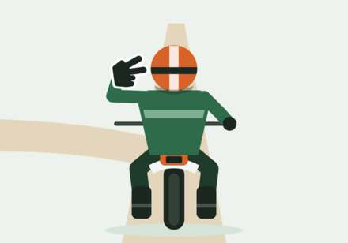
01Lead: two fingers to the goggles“Eyes on…” Left hand, keep riding.
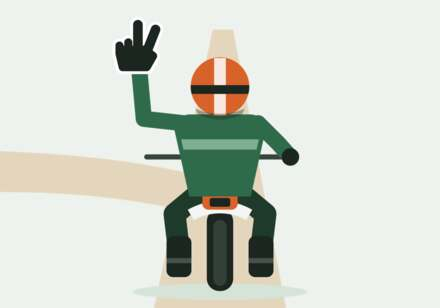
02Lead: two fingers up“…watch where I go.” Then the lead takes the turn.
03
Rider behind the lead: thumbs up“Got it, I’ll stop here.” Not passed down the line.
04
No thumbs-up?The lead slows down and repeats the signal, and stops if needed.
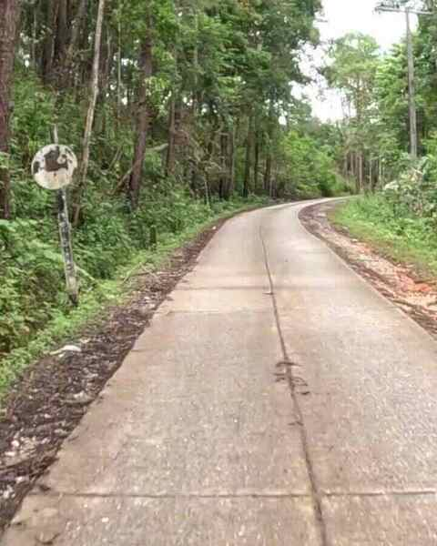
10“Corner man” step by step
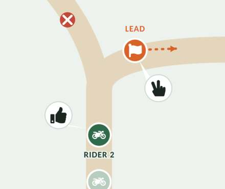
01SignalLead gives the V. Rider 2 gives a thumbs up.
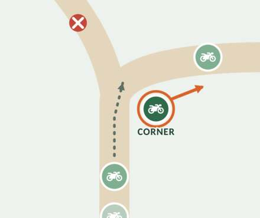
02Stop and pointPark off the line. Point the way, arm level.
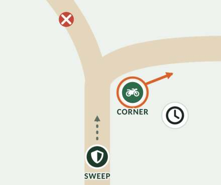
03Wait for sweepLet every rider pass. Stay until the sweep.
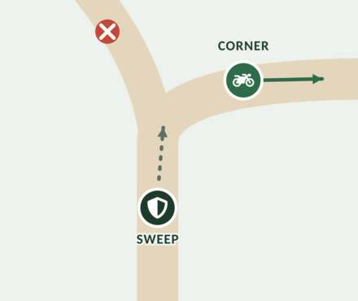
04RejoinRide on in front of the sweep.
leadercorner manriderssweeper
1 · The group rides up to a turn
Next junction: the new rider behind the lead becomes the corner man.
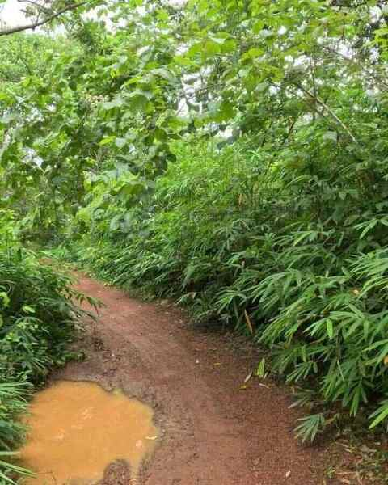
11Hand signals
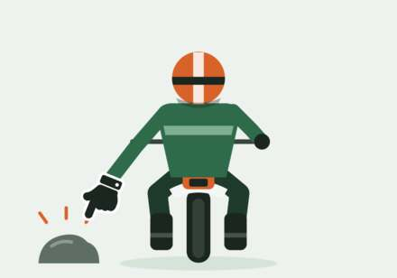
01Hazard on that sideArm pointing down, left or right (rock, hole, root)
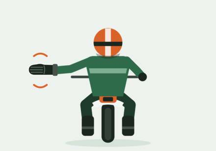
02Slow downPalm down, waving up and down
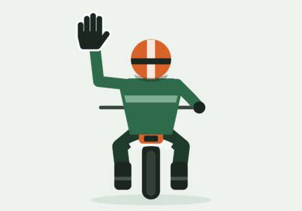
03StoppingArm raised, palm open
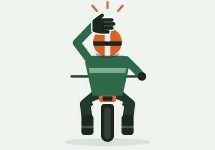
04Rider needs help / group should stopHand tapping top of helmet
Pass every signal down the line to the rider behind you.
12
Respect the locals
01
Ride gentlyALWAYS slow down near villages, farms, people and animals. Walking pace, low throttle, low noise. Leave gates as you found them. No littering: pack out everything you bring in
02
Be friendly, never argueWave, nod, and smile. Never argue with locals or rangers. If they confront you, stay polite, apologise and leave.
Their goodwill keeps our trails open
13
Team play, not a race
Leave your ego at the start.
01
No dramaNo drama, no negativity, no disrespecting other riders
02
Respect the leadRespect the lead's calls on route and pace
03
Feedback in privateIf you have any negative feedback give it in private
Have fun on the trails!